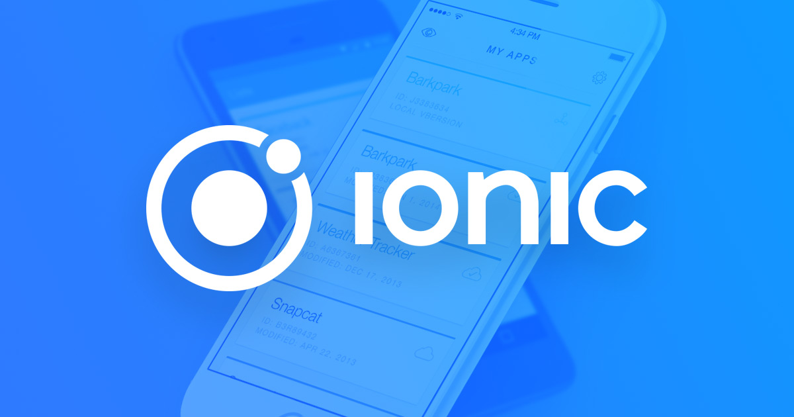
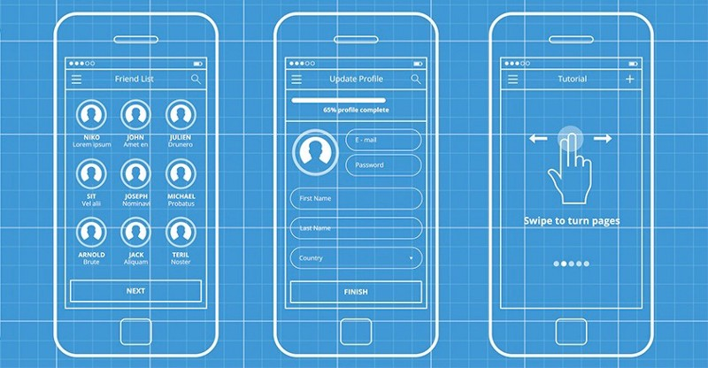

¿Que es Ionic?
Ionic es un framework de desarrollo de aplicaciones móviles híbridas que te permite crear aplicaciones para iOS, Android y web utilizando tecnologías web como HTML, CSS y JavaScript. Esto significa que puedes construir una sola aplicación que funcione en múltiples plataformas, ahorrando tiempo y recursos.

Inscribirse
¿Qué aprenderías en un curso de Ionic?
Fundamentos de Ionic: Entender la arquitectura de Ionic, componentes básicos, navegación y estructura de proyectos.
Desarrollo de interfaces de usuario: Crear interfaces de usuario atractivas y responsivas utilizando los componentes predefinidos de Ionic y personalizándolos según tus necesidades.
Integración de servicios: Conectar tu aplicación a servicios externos como bases de datos, APIs y servicios de terceros para obtener datos y funcionalidades adicionales.
Gestión del estado de la aplicación: Manejar el estado de tu aplicación utilizando herramientas como Redux o NgRx para construir aplicaciones más complejas y escalables.
Pruebas y depuración: Escribir pruebas unitarias y de integración para garantizar la calidad de tu código y depurar errores de manera eficiente.
Publicación de aplicaciones: Preparar tu aplicación para su publicación en las tiendas de aplicaciones y en la web.
¿Por qué aprender Ionic?
Desarrollo multiplataforma: Crea aplicaciones para iOS, Android y web con un solo código base.
Gran comunidad: Ionic cuenta con una gran comunidad de desarrolladores, lo que significa que encontrarás muchos recursos, tutoriales y soporte en línea.
Fácil de aprender: Si tienes conocimientos básicos de HTML, CSS y JavaScript, podrás aprender Ionic rápidamente.
Rendimiento nativo: Ionic ofrece un rendimiento cercano al nativo, lo que significa que tus aplicaciones se ejecutarán de manera fluida en los dispositivos móviles.
Amplia variedad de componentes: Ionic proporciona una amplia gama de componentes predefinidos para construir rápidamente interfaces de usuario complejas.
Para empezar a desarrollar aplicaciones móviles híbridas con Ionic, necesitarás:
Conocimientos básicos: Un sólido entendimiento de HTML, CSS y JavaScript es fundamental para construir la interfaz y la lógica de tu aplicación.
Entorno de desarrollo: Un editor de código como Visual Studio Code, Sublime Text o Atom te permitirá escribir y gestionar tu código de manera eficiente.
Node.js y npm: Estas herramientas son indispensables para instalar y gestionar las dependencias de Ionic.
Ionic CLI: La interfaz de línea de comandos de Ionic te permitirá crear nuevos proyectos, agregar componentes y gestionar tu aplicación.
Herramientas para dispositivos: Dependiendo de la plataforma a la que quieras desplegar tu aplicación, necesitarás el SDK de Android (para Android) o Xcode (para iOS).
Emulador o dispositivo físico: Para probar tu aplicación en tiempo real, necesitarás un emulador o un dispositivo físico con las plataformas objetivo instaladas.
